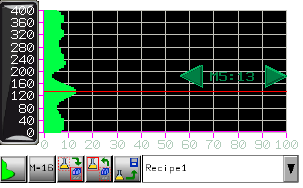

|
|
|
|
|
|
|
|
A Parison is a plastic tube with a hole in one end so compressed air can pass through during the blow molding process in a manufacturing environment to create hollow objects. Blow molding causes the Parison to extrude based on a thickness profile.
The Parison Graph feature in Vijeo Designer enables you to display and adjust the thickness profile of a Parison. The Parison's thickness profile data is stored in Vijeo Designer recipes. For more information on how to work with the Parison Graph Toolchest part at run time, see Section 17.6.11, Parison Recipes at Run Time.
The following image shows an example of the Parison Graph Toolchest part, which you can use to plot, monitor, and modify the parameters during the blow molding process.

The Parison Graph's key concepts are described as follows:
The x-axis plots the maximum and minimum data points on the graph. To define the x-axis in the Editor, configure the Value Min and Value Max properties in the Toolchest properties for the Parison Graph part.
The y-axis plots the elements in the single array variable for the Parison Recipe Group. To define the y-axis in the Editor, create a Parison Recipe Group, and assign an Integer variable. The Parison Recipe Group allows one array in the Integer variable, where you can define 64 to 400 elements under the Ingredient Variable column in the Parison Recipe. The values you set up for each element in the Parison Recipe will be plotted on the Parison Graph.
The master point selection button
allows you to adjust the extrusions in the thickness profile at runtime.
On the Parison Graph, click the left and right arrow buttons at a
master point to change the element values to modify the extrusion
profile. The other element values in the other master points will
also change to round out the curves of the Parison.
For example, if you define 64 elements and you set the master point
to 16 (M=16), every 4 points would be a master point. Or, if you set
the master point to 32 (M=32), every 2 points would be master point.
The lower the master point setting (e.g., 16), your profile adjustments
would be less detailed; the higher the master point setting (e.g.,
32), your profile adjustments would be more detailed.
The Parison Graph Toolchest part is supported by target machines with screens larger than 320x240 pixels. HMISTO does not support Parison Graph Toolchest part.
The following steps describe how to set up a Parison Graph in your project in the Editor.
Add the Parison Graph Toolchest part to the panel, and configure the Parison Graph in the Parts properties. For more information, see Section 12.4.1, Adding Toolchest Graphs to a Project and Parison Graph Properties. You can add a maximum of eight Parison Graphs on a panel.
Create a new Parison Recipe Group. For more information, see Section 17.3.3, Creating a Recipe Group. You can only assign one Parison Recipe Group to one Parison Graph.
Configure the Parison Recipe Group. For more information, see Section 17.3.4, Editing a Recipe Group.
Define a unique Parison Control for the Parison Graph. Note that you can only use Parison Controls for Parison Graphs and Recipe Controls for standard Recipe Groups. For more information on Parison Controls, see Section 17.3.5, Setting Up Recipe Controls.
The following describes how to work with a Parison Graph in your application at Runtime.
Work with the Parison Graph using the following functions located below the graph:
Touch Enable/Disable button - Sets the Parison Graph in view mode (Disabled setting) or edit mode (Enabled setting). If you set the Parison Graph to Disabled, you will not be able to master point values.
Master Point Number Selection button - Allows you to select the number of master points, which can be 16, 24, 32, 40, 48, 56, or 64. The label on the button shows the current number of Master Points. Press the button to move through the selections in increasing value order. When a panel with a Parison Graph is initially opened, the Master Points value is 16. If you set it to another value, the next time the panel with the Parison Graph is opened, the new value is displayed. If you reboot your target machine, the Master Points value resets to 16.
Send button - Sends the Parison Graph values to the PLC.
Save button - Saves the Parison Graph to the recipe profile.
Snapshot button - Takes a snapshot of all the Parison Graph points from the PLC.
Recipes combo box - Allows you to select a Parison recipe.
Display the Master Point index number and its value by touching the area near the master point location. The Master Point Number and value of the point display over the graph. You can adjust the value by pressing the left arrow button and right arrow button. One press of the button increases the value by 1. Any change in a Master Point value would result in the recalculation of all the free points (the points between two Master Points) and an update of the entire Parison Graph drawing.

If you modify a Parison Graph and you send to the PLC, all the free points are recalculated and sent to the PLC. All the free points on the PLC will be overwritten, and any previous changes that were made externally will be overwritten.
Property |
Description |
Name |
The Parison Graph part's name. Whenever an object is created, a default name is generated. When renaming an object, its name must be unique within the target, must contain no more than 32 valid characters, and must follow the naming conventions. For details, see Appendix 9, Naming Conventions. |
Version |
This property is read only and displays the editor version that created the part. |
Top |
The coordinates, in pixels, of the top-left corner of the object.
By changing these properties, the graphical object can be moved up, down, left, and right.
|
Left |
|
Width |
The width/height of the part in pixels. The minimum size for the Parison Graph Toolchest part is 280W x 200H pixels. |
Height |
|
Display Format |
Select either Line or Fill. Expand the property to define:
|
Plate Color |
Select a background color for the Parison Graph. |
Indicator Color |
Select the color for drawing the indicator line. Expand the property to define the color for the indicator arrows. |
Mark Style |
Select the style for the marks that will display on the graph. You can select from many styles, such as a dot, circle, cross, diamond, and rectangle. Expand the property to define its color.
|
Parison Group |
Select a Parison Recipe Group from the list of existing Parison Groups. You can select only one Parison Group for a Parison Graph. Once you identify the Parison Recipe Group, the variable information on that recipe group is loaded into the Parison Graph. |
Data Axis Grid |
Select Enable to display the data grid lines on the Parison graph.
Color - Select the color of the grid lines. |
Points Axis Grid |
Select Enable to display the channel grid lines on the Parison graph.
Color - Select the color of the grid lines. |
Data Axis Scale |
Select Enable to display the horizontal axis. Expand the property to define: Color - Select the color of the horizontal axis scale. Number of Divisions - Select an integer between 1 and 15 for the number of divisions on the horizontal axis.
|
Points Axis Scale |
Select Enable to display the vertical axis on the Parison graph.
Color - Select the color of the axis scale. |
Data Axis Label |
Select Enable to display the data label on the horizontal axis.
Color - Select the color of the axis scale. |
Value Min/Value Max |
Defines the data values at the minimum and maximum points on the graph. The out-of-range data points will not be plotted. You can use a constant value or a variable. Use the variable if you want to change the minimum and maximum values dynamically at runtime. Make sure the Min value is less than the Max value. |
Restore Defaults |
Click the Restore arrow button to restore the original default property settings. |
Placeholder |
You can assign a placeholder in any property that requires a variable definition. Click the ellipsis to open the Placeholders dialog box and edit the variable placeholder for the object. The dialog box only displays if you had set up a placeholder for the object. For more information on placeholders, see Section 21.2.4, Working with Variable Placeholders. |